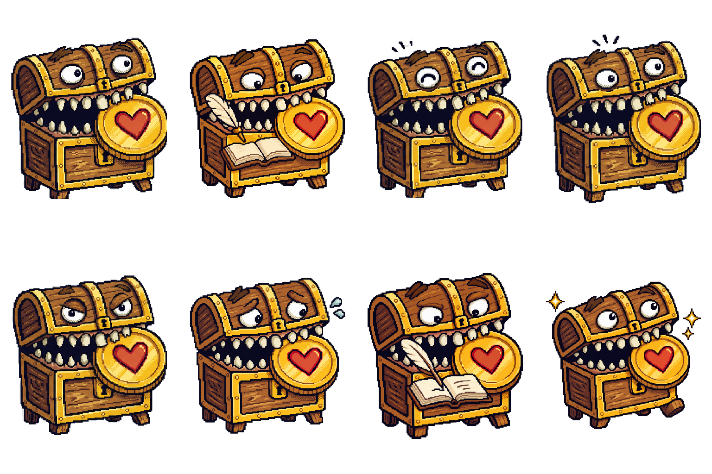

Canonical control · state
Idle
Neutral, available, and attentive.
Exact master SHA-256
d94da31bbe9152ecb05c7464926a45b7b329dbbe55405ac9484ff25819a77e68Eight-pose lineage calibration: four canonical controls stay intact while four semantically important poses are repaired to the same handcrafted RPG language.

Judge silhouette, emotional register, prop clarity, and family consistency. Masters are displayed proportionally; optical evidence is the real 128 px raster.
Neutral, available, and attentive.
d94da31bbe9152ecb05c7464926a45b7b329dbbe55405ac9484ff25819a77e68Quietly reviews an open ledger; quill remains visibly above the page.
b6231d641e032ba3a7cfa856553ceeb9eca0f526a0375cb70df7cf0466988337Warm positive acknowledgement.
1a350e5c6b9995c9ea5d8be5a1e73c2fcd8dc38646f08d08488b8446ef50d294Friendly prompt that asks for attention.
1a24a850d965fe97889a93e95250a4b463649686909c830f03040185990716ddFirm, high-attention accounting boundary.
08eb6a2ab5f54f17f252e8693dab2fd81415a370bba7c4a1665f325e3e141fdfRestrained, recoverable concern without blame or disaster.
74abb07a02aab5eb23c5f69821eee7db5149c3fbfda2e7673682d6db9b1f746eQuill writes on the left page while restrained prior-entry marks remain visible on the right.
3e6f930e511404840007c0fc86a2230524b021102adbbb1b29bf8e23b4eed948A modest forward step with restrained completion sparkles.
27c528b461ca5c3cbbf72ac1568a248a11deed2c9c197832157e6d242e3ace54Working keeps a visible air gap beneath the quill. Record ledger requires nib-to-page contact and a short ink stroke.
Serious is direct and firm. Concerned stays softer, slightly tucked, and never implies blame, destruction, or permanent failure.
Idle, Happy, Reminder, and Serious are existing runtime sources used read-only. They anchor anatomy, warmth, and pixel density; this page does not promote or modify them.
IdleThe exact eight master hashes shown here are approved. This evidence remains review-only: no runtime asset changes, no sprite timing, no animation sheet, and no production promotion. Approved ImageGen repairs: Working, Concerned, Record ledger, Adventure complete. Gate A stays open for the remaining families.
Generated deterministically from manifest lineage · sheet eea15ebaff7ccb1f68f44cc7ea12b1484c73836fabf439bf7f639c37c55107f3